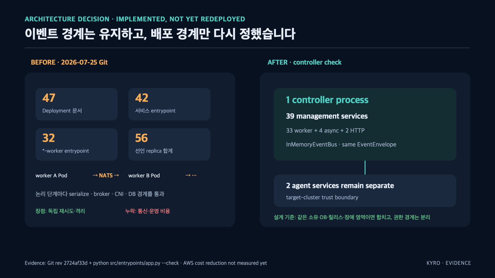

서비스 40개를 한 스트림으로 잇기
Kyro 는 장애 감지부터 원인 판정, 복구 PR 생성, 배포 후 확인까지가 하나의 흐름입니다. 이 흐름을 서비스 40여 개가 나눠 맡습니다.
처음 떠오르는 구조는 앞 단계가 뒷 단계를 직접 호출하는 것입니다. 이 구조의 문제는 두 가지입니다.
- 뒷 단계가 느려지면 앞 단계도 같이 멈춥니다. 장애를 복구하는 시스템이 장애에 제일 약한 구조가 됩니다
- 새 기능을 붙이려면 호출하는 쪽 코드를 열어야 합니다. 알림 기능 하나 추가에 판정 서비스를 재배포하게 됩니다
설계
서비스는 서로를 모릅니다. 일어난 일을 스트림에 적고, 필요한 쪽이 구독합니다.
[장애 감지] --incident.detected--> ┐
[증거 수집] --evidence.built----> │ SERVICE_EVENTS (NATS JetStream, 스트림 1개)
[원인 판정] --rca.completed-----> │
[복구 실행] --recovery.planned--> ┘
└--> 구독: 알림 · 대시보드 · 감사 로그 · 타임라인 ...
스트림은 하나입니다. 흩어 놓으면 “이 이벤트는 어느 스트림에 있지” 가 새로운 관리 문제가 됩니다.
논리 경계(이벤트)와 물리 경계(배포)는 다른 문제라는 것도 이 구조에서 배웠습니다. 이벤트 경계는 그대로 두고 물리 배포만 통합한 전후를 정리한 그림입니다.

이벤트로 통신하는 한, 서비스가 한 프로세스에 살든 47개 파드에 흩어져 살든 코드는 같습니다. 경계를 이벤트에 두면 배포 형태는 비용에 맞춰 바꿀 수 있습니다.
이벤트 이름 규칙
이름은 도메인.행동 으로 통일하고, 두 종류를 구분했습니다.
git.changed 과거형 = 이미 일어난 사실. 구독자가 몇 명이든 상관없음
command.requested 요청형 = 처리해 달라는 신호. 처리 주체가 하나여야 함
이 구분이 없으면 “이 이벤트를 내가 처리해도 되나” 를 코드를 읽어야 알 수 있습니다. 이름에 박아 두면 구독자가 규칙만 보고 판단합니다.
무한히 쌓이면 안 된다
스트림 하나에 다 적으면 용량이 계속 늡니다. 상한 없이 두면 어느 날 조용히 오래된 이벤트가 밀려나거나 디스크가 찹니다. 상한을 계약으로 명시했습니다.
STREAM_MAX_AGE_SECONDS = 7 * 24 * 60 * 60 # 7일
STREAM_MAX_BYTES = 512 * 1024 * 1024 # 512MiB, 1Gi PVC 오버헤드 고려
STREAM_DUPLICATE_WINDOW_SECONDS = 24 * 60 * 60확인할 수 있는 것
- 이벤트 이름 전체와 규칙 주석:
src/packages/contracts/event_bus/subjects.py - 새 기능이 구독만으로 붙는 예: 알림 · 감사 · 타임라인 워커는 판정 서비스 코드를 건드리지 않고 추가됐습니다
이 선택의 값을 측정했다
JetStream 이 공짜가 아니라는 것도 숫자로 확인했습니다. 같은 이벤트 계약을 인메모리 버스와 JetStream 에 각각 태워 로컬에서 비교한 결과입니다.
처리량 수치는 같은 리비전의 측정 스크립트·입력·환경·원본 결과가 함께 보존될 때만 비교할 수 있습니다. 현재 공개 저장소에는 이 비교를 재현할 원본이 없으므로, 특정 배수나 비용 절감 성과를 주장하지 않습니다. 여기서 확인할 수 있는 것은 이벤트 계약과 버스 구현의 역할 차이뿐입니다.
한계
이벤트로 잇는 대가는 공짜가 아닙니다. 유실 · 중복 · 순서 문제가 생기고, 흐름 추적이 어려워집니다. 유실과 중복을 어떻게 막았는지는 다음 글인 Transactional Outbox 에 있습니다.